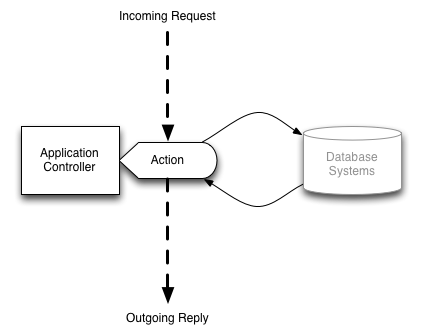

<?xml version="1.0" encoding="UTF-8"?>
<rss version="2.0"
	xmlns:content="http://purl.org/rss/1.0/modules/content/"
	xmlns:wfw="http://wellformedweb.org/CommentAPI/"
	xmlns:dc="http://purl.org/dc/elements/1.1/"
	xmlns:atom="http://www.w3.org/2005/Atom"
	xmlns:sy="http://purl.org/rss/1.0/modules/syndication/"
	xmlns:slash="http://purl.org/rss/1.0/modules/slash/"
	>

<channel>
	<title>Underflow &#187; types</title>
	<atom:link href="http://www.underflow.ca/blog/tag/types/feed" rel="self" type="application/rss+xml" />
	<link>http://www.underflow.ca/blog</link>
	<description>Thoughts, Ideas, Articles, and Essays by Jacob Groundwater</description>
	<lastBuildDate>Wed, 25 Apr 2012 07:12:26 +0000</lastBuildDate>
	<language>en-US</language>
	<sy:updatePeriod>hourly</sy:updatePeriod>
	<sy:updateFrequency>1</sy:updateFrequency>
	<generator>http://wordpress.org/?v=3.4.1</generator>
	<div style="color: #C09853;background-color: #FCF8E3;border: 1px solid #FBEED5;padding: 8px 35px 8px 14px;margin-bottom: 18px;-webkit-border-radius: 4px;-moz-border-radius: 4px;border-radius: 4px;">This site has been archived, for my current blog please go <a href=../../../../index.html>here</a>.</div>	<item>
		<title>Playing with Actors!</title>
		<link>http://www.underflow.ca/blog/702/playing-with-actors?utm_source=rss&#038;utm_medium=rss&#038;utm_campaign=playing-with-actors</link>
		<comments>http://www.underflow.ca/blog/702/playing-with-actors#comments</comments>
		<pubDate>Sun, 08 Apr 2012 08:00:32 +0000</pubDate>
		<dc:creator>jacob</dc:creator>
				<category><![CDATA[Journal]]></category>
		<category><![CDATA[akka]]></category>
		<category><![CDATA[playframework]]></category>
		<category><![CDATA[programming]]></category>
		<category><![CDATA[scala]]></category>
		<category><![CDATA[types]]></category>

		<guid isPermaLink="false">http://www.underflow.ca/blog/?p=702</guid>
		<description><![CDATA[How to write web applications seem to be a source of endless debate on the internet, much like anything that is largely a matter of opinion. What exactly constitutes a good platform? It can be hard to say. Some of the largest successes are written on what are generally regarded as poor platforms. Facebook is written in PHP (or used to be), Twitter started as a Ruby on Rails application. In truth, I think whatever personally gets you going is the way to work. If you love Abstract Singleton Proxy Factories then perhaps Java is the way to go! On the other hand, if you insist on being a mathematical heavyweight, Haskell might be your pleasure. Personally, I like the whole asynchronous messaging workflow. I don't know why; it makes sense in my head. I am pleased that Play framework comes with Akka, a message-driven asynchronous framework. I will present a simple Play example and try to explain why I did what I did. Just for kicks, I threw in dependency injection because it fits well with creating an actor-messaging framework. Overview Play routes incoming HTTP requests to Controllers, these are objects you create. A controller can do it all if you wish, it can process the entire request all the way down to accessing the database, but that was not my goal. Below is an example of a totally synchronous design, where the controller handles everything: Time to throw some actors into the mix. Instead of programming the business logic directly in the controller, a message object encapsulating the request will be fired off to a background Actor asynchronously. The controller is then immediately free to handle more incoming requests. The response is no longer sent from the controller, but from a one-time object called a Future or Promise that awaits the actors reply. Actors and Controllers are permanent parts of the system. Futures and messages exist only during a request. Actors can be as simple or as complicated as necessary. For example different actors could be in charge of different business objects in the system. Alternatively one actor could handle everything, dividing messages up by convenient case-classes and pattern matching.1 Talking to Actors The controller will look like this: As the controller receives a request, it will be forwarded to the relevant actor by way of an asynchronous message. Since eventually the browser of our website will expect a reply, it's not as simple as: We need to process the request then send a reply while maintaining the context and scope of the open client connection. Play provides a sort of boilerplate solution for us: The code Async and AkkaPromise handle the Future returned by `actor ? message` that will eventually contain our reply back to the users browser.2 Note: This does not handle timeouts gracefully. This is left as an exercise to the reader... and myself. Better Communication Actors represent the business logic of the system. As such, they don't really need to know any HTTP details. [...]]]></description>
			<content:encoded><![CDATA[<p>How to write web applications seem to be a source of endless debate on the internet, much like anything that is largely a matter of opinion. What exactly constitutes a good platform? It can be hard to say. Some of the largest successes are written on what are generally regarded as poor platforms. Facebook is written in PHP (or used to be), Twitter started as a Ruby on Rails application.</p>
<p>In truth, I think whatever personally gets you going is the way to work. If you love <a href="http://static.springsource.org/spring/docs/2.5.x/api/org/springframework/aop/framework/AbstractSingletonProxyFactoryBean.html">Abstract Singleton Proxy Factories</a> then perhaps Java is the way to go! On the other hand, if you insist on being a <a href="http://stackoverflow.com/questions/3870088/a-monad-is-just-a-monoid-in-the-category-of-endofunctors-whats-the-problem">mathematical heavyweight</a>, Haskell might be your pleasure.</p>
<p>Personally, I like the whole asynchronous messaging workflow. I don't know why; it makes sense in my head. I am pleased that Play framework comes with Akka, a message-driven asynchronous framework. I will present a simple Play example and try to explain why I did what I did.</p>
<p>Just for kicks, I threw in dependency injection because it fits well with creating an actor-messaging framework.</p>
<h2>Overview</h2>
<p>Play routes incoming HTTP requests to <code>Controllers</code>, these are objects you create. A controller can do it all if you wish, it can process the entire request all the way down to accessing the database, but that was not my goal. Below is an example of a totally synchronous design, where the controller handles everything:</p>
<p></p>
<p>Time to throw some actors into the mix.</p>
<p>Instead of programming the business logic directly in the controller, a message object encapsulating the request will be fired off to a background Actor asynchronously. The controller is then immediately free to handle more incoming requests. The response is no longer sent from the controller, but from a one-time object called a Future or Promise that awaits the actors reply.</p>
<p></p>
<p>Actors and Controllers are permanent parts of the system. Futures and messages exist only during a request.</p>
<p></p>
<p>Actors can be as simple or as complicated as necessary. For example different actors could be in charge of different business objects in the system. Alternatively one actor could handle everything, dividing messages up by convenient case-classes and pattern matching.<sup><a href="../../../702/playing-with-actors/index.html#footnote_0_702" id="identifier_0_702" class="footnote-link footnote-identifier-link" title="See my previous post Learning Scala: Case Classes and Pattern Matching">1</a></sup></p>
<h2>Talking to Actors</h2>
<p>The controller will look like this:</p>
<pre><pre class="brush: scala; title: ; notranslate">
class Application( val actor: ActorRef ) extends Controller {
    
    def index = Action { implicit request =&gt;
        
        // Talk to actor
        
    }
}
</pre>
<p>As the controller receives a request, it will be forwarded to the relevant actor by way of an asynchronous message. Since eventually the browser of our website will expect a reply, it's not as simple as:</p>
<pre><pre class="brush: scala; title: ; notranslate">
actor ! message
</pre>
<p>We need to process the request then send a reply while maintaining the context and scope of the open client connection. Play provides a sort of boilerplate solution for us:</p>
<pre><pre class="brush: scala; title: ; notranslate">
class Application( val actor: ActorRef ) extends Controller {
    
    implicit val timeout : Timeout = Timeout(Duration(5,&quot;seconds&quot;))
    
    def index = Action { implicit request =&gt;
        
        Async {
            new AkkaPromise( actor ? &quot;Incoming Message!&quot; ) map {

                // Handle Reply

            }
        }        
    }
}
</pre>
<p>The code <code>Async</code> and <code>AkkaPromise</code> handle the <code>Future</code> returned by <code>`actor ? message`</code> that will eventually contain our reply back to the users browser.<sup><a href="../../../702/playing-with-actors/index.html#footnote_1_702" id="identifier_1_702" class="footnote-link footnote-identifier-link" title="Read more about Async in the Scala Async API">2</a></sup></p>
<p><em>Note</em>: This does not handle timeouts gracefully. This is left as an exercise to the reader... and myself.</p>
<h3>Better Communication</h3>
<p>Actors represent the business logic of the system. As such, they don't really need to know any HTTP details. The controller's job is thus to parse the HTTP request into a more generic request that the actors would prefer.</p>
<p>The power of case classes will come into play. Case classes are the meat and potatoes of actor messaging. Need a specific kind of message? Make a case class. Let's make one now, something simple.</p>
<pre><pre class="brush: scala; title: ; notranslate">
case class Get(path: String)
</pre>
<p>By using case classes the compiler will help check our message logic. Now the controller can send better messages</p>
<pre><pre class="brush: scala; highlight: [8]; title: ; notranslate">
class Application( val actor: ActorRef ) extends Controller {
    
    implicit val timeout : Timeout = Timeout(Duration(5,&quot;seconds&quot;))
    
    def index = Action { implicit request =&gt;
        
        Async {
            new AkkaPromise( actor ? Get(request.path) ) map {

                // Handle Reply

            }
        }        
    }
}
</pre>
<p>The actor receiving the message can easily parse this using pattern matching:</p>
<pre><pre class="brush: scala; highlight: [3]; title: ; notranslate">
class Getter extends Actor {
    def receive = {
        case Get(path) =&gt; 
            // Get and process your data using `path`
            // Create and send a response
            sender ! response
    }
}
</pre>
<p>The final line <code>sender ! response</code> will trigger the controllers asynchronous reply (line 10).</p>
<h2>Dependency Injection</h2>
<p>I'm going to pollute the focus of this article by also addressing dependency injection. Injecting actors into controllers feels like the right thing to do; I call it gut programming! So let's do it.</p>
<p>I am using what I understand to be the cake pattern<sup><a href="../../../702/playing-with-actors/index.html#footnote_2_702" id="identifier_2_702" class="footnote-link footnote-identifier-link" title="See Real-World Scala: Dependency Injection by Jonas Bon&eacute;r /">3</a></sup>. This is by far the most delicious sounding of all dependency injection frameworks, although Google Guice is a close second.</p>
<p>IMHO your objects do not need to know about the injection framework. If your object has a dependency, put it in the constructor.<sup><a href="../../../702/playing-with-actors/index.html#footnote_3_702" id="identifier_3_702" class="footnote-link footnote-identifier-link" title="The val is necessary if you wish to later reference the parameter by object.actor">4</a></sup></p>
<pre><pre class="brush: scala; title: ; notranslate">
class Application( val actor: ActorRef ) extends Controller {
    
    def index = Action { 

        // Use `actor` here

    }

}
</pre>
<p>For each class that requires injection, we add a trait that acts as the injector:</p>
<pre><pre class="brush: scala; title: ; notranslate">
trait ApplicationInjector {
    
    // To be injected by a mixing bowl
    val applicationActor: ActorRef 
    
    // must be `lazy val` or `def` otherwise it will not inject properly
    lazy val application: Application = 
        new Application(applicationActor)
    
}
</pre>
<p>In the above case, we directly create an injected object. You can also create a subclass within the injector where dependencies are pre-filled.</p>
<pre><pre class="brush: scala; title: ; notranslate">
trait ApplicationInjector {
    
    // To be injected by a mixing bowl
    val applicationActor: ActorRef 
    
    class InjectedApplication extends 
        Application( applicationActor )
    
}
</pre>
<p>To handle the injections, use a mixing bowl:</p>
<pre><pre class="brush: scala; title: ; notranslate">
object MixingBowl extends ApplicationInjector {
    
    val applicationActor = system.actorOf( 
        Props[Getter], name=&quot;application&quot; 
    )
    
}
</pre>
<p>There is now a fully injected application controller at <code>MixingBowl.application</code>.<sup><a href="../../../702/playing-with-actors/index.html#footnote_4_702" id="identifier_4_702" class="footnote-link footnote-identifier-link" title="Although I haven&#039;t really covered it here, this pattern is necessary to survive more complicated injection setups.">5</a></sup></p>
<h2>Full Example</h2>
<p>The full example, with lots of comments is hosted on github. The names of classes and objects have been changed slightly to protect the innocent.</p>
<div style="text-align:center; margin:25px 20px 50px 20px; padding:25px; border:1px dashed black;"><a href="https://github.com/jacobgroundwater/Akka-Actors">https://github.com/jacobgroundwater/Akka-Actors</a></div>
<h2>Footnotes</h2>
<ol class="footnotes"><li id="footnote_0_702" class="footnote">See my previous post <a href="../../../584/learning-scala-case-classes-and-pattern-matching/index.html">Learning Scala: Case Classes and Pattern Matching</a></li><li id="footnote_1_702" class="footnote">Read more about <code>Async</code> in the <a href="http://www.playframework.org/documentation/2.0/ScalaAsync">Scala Async API</a></li><li id="footnote_2_702" class="footnote">See <a href="http://jonasboner.com/2008/10/06/real-world-scala-dependency-injection-di">Real-World Scala: Dependency Injection</a> by Jonas Bonér /</li><li id="footnote_3_702" class="footnote">The <code>val</code> is necessary if you wish to later reference the parameter by <code>object.actor</code></li><li id="footnote_4_702" class="footnote">Although I haven't really covered it here, this pattern is necessary to survive more complicated injection setups.</li></ol>]]></content:encoded>
			<wfw:commentRss>http://www.underflow.ca/blog/702/playing-with-actors/feed</wfw:commentRss>
		<slash:comments>0</slash:comments>
		</item>
		<item>
		<title>Thinking Scala</title>
		<link>http://www.underflow.ca/blog/655/thinking-scala?utm_source=rss&#038;utm_medium=rss&#038;utm_campaign=thinking-scala</link>
		<comments>http://www.underflow.ca/blog/655/thinking-scala#comments</comments>
		<pubDate>Wed, 04 Apr 2012 08:00:15 +0000</pubDate>
		<dc:creator>jacob</dc:creator>
				<category><![CDATA[Journal]]></category>
		<category><![CDATA[programming]]></category>
		<category><![CDATA[scala]]></category>
		<category><![CDATA[types]]></category>

		<guid isPermaLink="false">http://www.underflow.ca/blog/?p=655</guid>
		<description><![CDATA[Scala is one of those languages that's almost too smart for it's own good. I like everything about it, but I still think it lacks appeal to a wide audience. I want to share my experiences learning the language, so perhaps more people can see why the language definitely has appeal. An appeal which begins to form when one "thinks in scala". Coming from Python, I used to think that the equals sign ( = ) was what defined a name in the current scope. The following is valid Python: I kept this thinking moving into Scala, but this thinking must be abandoned. Names are defined in scope by the keywords var, val, and def. The first two terms behave like Python equals, the last does not, nor does it behave like Python def which defines a function. In Scala def behaves a lot like a value; we do not always have to explicitly call apply on the defined function to receive a value. Calling a Nullary Function in Python Although we can define function in scala that look identical to the above, We can also create argument-less functions that are accessed exactly like other values and variables. Calling a Nullary Function in Scala In Python, def creates a function that must be explicitly called. In Scala, despite looking like a value from the outside a is indeed a function that is being executed every time its value is accessed: The block of code is executed each time a is read. To explicitly reveal the function we call The a _ tells Scala to create a partial function, and return a function, yes even if the function originally has zero arguments. Code Blocks In Scala, every expression has a value1. Specifically code blocks have values; the value of their last expression. The above block has type Int, despite printing the string "Hi" when first defined. We can assign code blocks, using equals ( = ), to a name defined by val, var, or def. Thus we can have: The value of i is assigned the value produced by the code block on the right, in this case the integer 10. Upon assignment, the code block is executed and the string "hi" is printed immediately. Similarly we can use def, but the result will be different: In the former example, the code block is evaluated one, at the beginning. The resulting integer is then stored in the name i. Accessing i merely accesses the pre-computed value as seen below: The latter case does not execute the code block during definition, there is no pre-computed value. The code block is accessed every time j is subsequently accessed in the code. Scala also calls this property pass by name. There's more! We can get a hybrid behavior with lazy values. A lazy value computes the block once and only once, but the computation is delayed until the value is first accessed. Lazy values may seem almost identical to non-lazy values. In a purely-functional [...]]]></description>
			<content:encoded><![CDATA[<p>Scala is one of those languages that's almost too smart for it's own good. I like everything about it, but I still think it lacks appeal to a wide audience.</p>
<p>I want to share my experiences learning the language, so perhaps more people can see why the language definitely has appeal. An appeal which begins to form when one <em>"thinks in scala"</em>.</p>
<p>Coming from Python, I used to think that the equals sign ( = ) was what <em>defined</em> a name in the current scope. The following is valid Python:</p>
<pre class="brush: python; title: ; notranslate">
x = 10
y = 11
z = x + y
print z
</pre>
<p>I kept this thinking moving into Scala, but this thinking must be abandoned. Names are defined in scope by the keywords <code>var</code>, <code>val</code>, and <code>def</code>. The first two terms behave like Python equals, the last does not, nor does it behave like Python <code>def</code> which defines a function.</p>
<p>In Scala <code>def</code> behaves a lot like a value; we do not always have to explicitly call apply on the defined function to receive a value.</p>
<p><strong>Calling a Nullary Function in Python</strong></p>
<pre class="brush: python; title: ; notranslate">
&gt;&gt;&gt; def a() : return &quot;I'm a function&quot;
&gt;&gt;&gt; print a
&lt;function a at 0x102020c08&gt;
&gt;&gt;&gt; print a()
I'm a function
</pre>
<p>Although we can define function in scala that look identical to the above,</p>
<pre class="brush: scala; title: ; notranslate">
&gt; def a() : String = &quot;I'm a function&quot;
&gt; a()
&quot;I'm a function&quot;
</pre>
<p>We can also create argument-less functions that are accessed <em>exactly</em> like other values and variables.</p>
<p><strong>Calling a Nullary Function in Scala</strong></p>
<pre class="brush: scala; title: ; notranslate">
&gt; def a : String = &quot;I'm a function&quot;
&gt; println(a)
I'm a function
</pre>
<p>In Python, <code>def</code> creates a function that must be explicitly called. In Scala, despite looking like a value from the outside <code>a</code> is indeed a function that is being executed every time its value is accessed:</p>
<pre class="brush: scala; title: ; notranslate">
&gt; def a : String = { &quot;My favorite number is &quot; + util.Random.nextInt }
&gt; println(a)
My favorite number is 571571362
&gt; println(a)
My favorite number is 1115839303
</pre>
<p>The block of code is executed each time <code>a</code> is read. To explicitly reveal the function we call </p>
<pre class="brush: scala; title: ; notranslate">
scala&gt; a _
res0: () =&gt; java.lang.String = &lt;function0&gt;
</pre>
<p>The <code>a _</code> tells Scala to create a partial function, and return a <em>function</em>, yes even if the function originally has zero arguments.</p>
<h2>Code Blocks</h2>
<p>In Scala, every expression has a value<sup><a href="../../../655/thinking-scala/index.html#footnote_0_655" id="identifier_0_655" class="footnote-link footnote-identifier-link" title="See Scala for the Impatient p.15">1</a></sup>. Specifically code blocks have values; the value of their last expression.</p>
<pre class="brush: scala; title: ; notranslate">
&gt; {
|     println(&quot;Hi&quot;)
|     10
| }
Hi
res: Int = 10
</pre>
<p>The above block has type <code>Int</code>, despite printing the string "Hi" when first defined. We can assign code blocks, using equals ( = ), to a name defined by <code>val</code>, <code>var</code>, or <code>def</code>. Thus we can have:</p>
<pre class="brush: scala; title: ; notranslate">
val i:Int = {
    println(&quot;Hi&quot;)
    10
}
</pre>
<p>The value of <code>i</code> is assigned the value produced by the code block on the right, in this case the integer 10. Upon assignment, the code block is executed and the string "hi" is printed immediately.</p>
<p>Similarly we can use <code>def</code>, but the result will be different:</p>
<pre class="brush: scala; title: ; notranslate">
def j:Int = {
    println(&quot;Hi&quot;)
    10
}
</pre>
<p>In the former example, the code block is evaluated one, at the beginning. The resulting integer is then stored in the name <code>i</code>. Accessing <code>i</code> merely accesses the pre-computed value as seen below:</p>
<pre class="brush: scala; title: ; notranslate">
&gt; val i:Int = { println(&quot;Hi&quot;); 10 }
Hi
i: Int = 10
&gt; i
res: Int = 10
&gt; i
res: Int = 10
</pre>
<p>The latter case does not execute the code block during definition, there is no pre-computed value. The code block is accessed <em>every</em> time <code>j</code> is subsequently accessed in the code.</p>
<pre class="brush: scala; title: ; notranslate">
&gt; def j:Int = { println(&quot;Hi&quot;); 10 }
i: Int
&gt; j
Hi
res: Int = 10
&gt; j
Hi
res: Int = 10
</pre>
<p>Scala also calls this property pass by name.</p>
<p>There's more!</p>
<p>We can get a hybrid behavior with lazy values. A lazy value computes the block once and only once, but the computation is delayed until the value is first accessed.</p>
<pre class="brush: scala; title: ; notranslate">
&gt; lazy val l:Int = {
|    println(&quot;Hi&quot;)
|    10
|}
l: Int
&gt; l
Hi
res: Int = 10
&gt; l
res: Int = 10
</pre>
<p>Lazy values may seem almost identical to non-lazy values. In a purely-functional language like Haskell, where almost all values are lazy, it makes no difference when something is computed. Scala is functional-like, but does not guarantee the same referential transparency<sup><a href="../../../655/thinking-scala/index.html#footnote_1_655" id="identifier_1_655" class="footnote-link footnote-identifier-link" title="See One or Two">2</a></sup>.</p>
<p>Scala supports closures, meaning a block can close over a variable in the outer scope.</p>
<h6>Non-Lazy Closure</h6>
<pre class="brush: scala; title: ; notranslate">
var price = 100
var quantity = 100

val profit: Int = { price * quantity }

price = 50 // Price drop
println(profit)
// 10000
</pre>
<h6>Lazy Closure</h6>
<pre class="brush: scala; title: ; notranslate">
var price = 100
var quantity = 100

lazy val profit: Int = { price * quantity }

price = 50 // Price drop
println(profit)
// 5000
</pre>
<p>The code is identical except for the <code>lazy</code> keyword, but as you can see produce different results. Either behavior is fine, just know what to expect.</p>
<p>Of course, the different behavior only arises because we used <code>var</code> which is mutable. If we used only <code>val</code> the second result is not possible.</p>
<h2>Footnotes</h2>
<ol class="footnotes"><li id="footnote_0_655" class="footnote">See <a href="http://typesafe.com/resources/scala-for-the-impatient">Scala for the Impatient</a> p.15</li><li id="footnote_1_655" class="footnote">See <a href="http://www.haskell.org/haskellwiki/Functional_programming#Referential_transparency">One</a> or <a href="http://www.haskell.org/haskellwiki/Referential_transparency">Two</a></li></ol>]]></content:encoded>
			<wfw:commentRss>http://www.underflow.ca/blog/655/thinking-scala/feed</wfw:commentRss>
		<slash:comments>0</slash:comments>
		</item>
		<item>
		<title>Math Should be Easier to Learn</title>
		<link>http://www.underflow.ca/blog/374/math-should-be-easier-to-learn?utm_source=rss&#038;utm_medium=rss&#038;utm_campaign=math-should-be-easier-to-learn</link>
		<comments>http://www.underflow.ca/blog/374/math-should-be-easier-to-learn#comments</comments>
		<pubDate>Fri, 02 Sep 2011 18:14:28 +0000</pubDate>
		<dc:creator>jacob</dc:creator>
				<category><![CDATA[Editorial]]></category>
		<category><![CDATA[computers]]></category>
		<category><![CDATA[education]]></category>
		<category><![CDATA[math]]></category>
		<category><![CDATA[notation]]></category>
		<category><![CDATA[teaching]]></category>
		<category><![CDATA[types]]></category>
		<category><![CDATA[writing]]></category>

		<guid isPermaLink="false">http://www.underflow.ca/blog/?p=374</guid>
		<description><![CDATA[The Standard Model in Physics explains everything we see and feel in the universe today, but remains utterly inaccessible to almost everyone Having gone through close to 40 math courses in my academic career, I can tell you without doubt that math notation, in all instance, sucks. I believe it is needlessly complicated, obfuscated, inauspicious and often full of erroneous assumptions. Least of all, it's difficult to learn. Science makes new discoveries by standing on the shoulders of giants - WikiMedia Commons The great insights of modern science, such as quantum mechanics, relativity, the standard model, are rooted in complex mathematical notation. Each theory supposedly explains its own slice of the universe, but all are generally inaccessible to even those schooled advanced mathematics, let alone the casual observer. Today there exists a generation unlike any before, a group of people growing up with unprecedented access to information via the internet. To most online-savvy individuals, questions are merely a few Google searches away from answers. For example many individuals can now make informed health decisions once delegated purely to medical professionals. There exist fully interactive 3D visualizations of the body's interior. Knowledge with the aid of a computer is suddenly accessible like never before. Why then is mathematics still so inaccessible? While there are emerging tools such as Wolfram Alpha, I think something is still missing. Mathematical objects are abstract - we cannot interact with them the same way that one can interact with a ball, a rock or even a distant planet. Balls can be bounced, rocks can be weighed and even distant planets can be directly observed through a telescope. Mathematical objects are not tangible, cannot be seen and have no physical analogue with which to compare. We learn about mathematics by moving notation around, thinking, and then if possible performing some type of visualization like a graph. This is tedious work, and it often interferes with the learning process. I think math notation needs to be computer friendly. In technical terms we need type-safe notation; those wishing for more detail will have to wait for my next post. We need a way to iteratively and incrementally learn more mathematics in a recreational fashion much as we can learn about biology and the planets. Math needs more consistent and computer-friendly notation so users can transfer their knowledge between branches and so I can ask a computer how to interact with the objects being described. I will present my own ideas in subsequent posts. In the meantime, please let me know your thoughts and opinions.]]></description>
			<content:encoded><![CDATA[<div style="margin: 1em auto; padding: .25em 0; width: 460px; text-align: center; border-bottom: 1px solid #666; font-size: 16pt;"><a href="http://www.flickr.com/photos/jwg/6106962505/" title="The Standard Model" rel="flickr-mgr" class="flickr-image"></a></p>
<p style="text-align: justify;">The <a href="http://en.wikipedia.org/wiki/Standard_Model">Standard Model</a> in Physics explains everything we see and feel in the universe today, but remains utterly inaccessible to almost everyone</p>
</div>
<p style="text-align: justify;">Having gone through close to 40 math courses in my academic career, I can tell you without doubt that math notation, in all instance, sucks. I believe it is needlessly complicated, obfuscated, inauspicious and often full of erroneous assumptions. Least of all, it's difficult to learn.</p>
<div style="float: right; border: 1px solid #aaa; margin: 0.5em; padding: 0.5em; width: 190px;"><a href="http://www.flickr.com/photos/jwg/6107508156/" title="Standing on the Shoulders of Giants" rel="flickr-mgr" class="flickr-image"></a></p>
<p style="margin: 0; padding: 0; text-align: right; font-size: 10pt;">Science makes new discoveries by standing on the shoulders of giants - <a href="http://en.wikipedia.org/wiki/Standing_on_the_shoulders_of_giants">WikiMedia Commons</a></p>
</div>
<p style="text-align: justify;">The great insights of modern science, such as quantum mechanics, relativity, the standard model, are rooted in <span style="background-color: #ffff99;">complex mathematical notation</span>. Each theory supposedly explains its own slice of the universe, but all are generally inaccessible to even those schooled advanced mathematics, let alone the casual observer.</p>
<p style="text-align: justify;">Today there exists a generation unlike any before, a group of people growing up with <span style="background-color: #ffff99;">unprecedented access to information</span> via the internet. To most online-savvy individuals, questions are merely a few Google searches away from answers. For example many individuals can now make informed health decisions once delegated purely to medical professionals.</p>
<p style="text-align: justify;">There exist <a href="http://bodybrowser.googlelabs.com/">fully interactive 3D visualizations</a> of the body's interior. Knowledge with the aid of a computer is suddenly accessible like never before.</p>
<a href="http://www.flickr.com/photos/jwg/6106959669/" title="Body Works - by Google" rel="flickr-mgr" class="flickr-image"></a>
<p style="text-align: justify;">Why then is mathematics still so inaccessible? While there are emerging tools such as <a href="http://www.wolframalpha.com/">Wolfram Alpha</a>, I think something is still missing.</p>
<p style="text-align: justify;">Mathematical objects are abstract - we cannot interact with them the same way that one can interact with a ball, a rock or even a distant planet. Balls can be bounced, rocks can be weighed and even distant planets can be directly observed through a telescope. <span style="background-color: #ffff99;">Mathematical objects are not tangible</span>, cannot be seen and have no physical analogue with which to compare.</p>
<p style="text-align: justify;">We learn about mathematics by moving notation around, thinking, and then if possible performing some type of visualization like a graph. This is tedious work, and it often interferes with the learning process.</p>
<a href="http://www.flickr.com/photos/jwg/6107500004/" title="Wolfram Alpha" rel="flickr-mgr" class="flickr-image"></a>
<p style="text-align: justify;">I think math notation needs to be computer friendly. In technical terms we need type-safe notation; those wishing for more detail will have to wait for my next post.</p>
<p style="text-align: justify;">We need a way to iteratively and incrementally learn more mathematics in a recreational fashion much as we can learn about biology and the planets. Math needs more consistent and <span style="background-color: #ffff99;">computer-friendly notation</span> so users can transfer their knowledge between branches and so I can ask a computer how to interact with the objects being described.</p>
<p style="text-align: justify;">I will present my own ideas in subsequent posts. In the meantime, please let me know your thoughts and opinions.</p>
]]></content:encoded>
			<wfw:commentRss>http://www.underflow.ca/blog/374/math-should-be-easier-to-learn/feed</wfw:commentRss>
		<slash:comments>2</slash:comments>
		</item>
	</channel>
</rss>

<!-- Performance optimized by W3 Total Cache. Learn more: http://www.w3-edge.com/wordpress-plugins/

Page Caching using disk: basic
Database Caching 29/37 queries in 0.260 seconds using disk: basic
Object Caching 648/675 objects using disk: basic

Served from: www.underflow.ca @ 2012-08-01 22:29:48 -->
<!-- Localized -->